2 METABRIC methylation data statistics
source(here::here("scripts/init.R"))2.1 Breakdown of samples
2.1.0.1 Figure 1A
options(repr.plot.width = 7, repr.plot.height = 7)
p_donut <- samp_data %>%
count(IHC) %>%
filter(!is.na(IHC)) %>%
left_join(
tibble(
IHC = c("ER+HER2-", "ER+HER2+", "ER-HER2+", "TNBC", "ADJNORMAL"),
group = c("ER+", "ER+HER2+", "ER-HER2+", "Triple negative", "Adjacent normal")
), by = "IHC") %>%
mutate(
IHC = factor(IHC, levels = c("ER+HER2-", "ER+HER2+", "ER-HER2+", "TNBC", "ADJNORMAL")),
lab = glue("{group}\n({n})")
) %>%
ggpubr::ggdonutchart("n", "lab", fill = "IHC", lab.pos = "out", palette = annot_colors$IHC, font.family = "Arial", lab.font = c(6, "bold", "black"), ggtheme = ggpubr::theme_pubr(base_size = 6, base_family = "Arial")) + guides(fill = "none")
p_donut1 <- samp_data %>%
count(ER1) %>%
rename(ER = ER1) %>%
filter(!is.na(ER)) %>%
left_join(
tibble(
ER = c("ER+", "ER-", "normal"),
group = c("ER+", "ER-", "Adjacent normal")
), by = "ER") %>%
mutate(
ER = factor(ER, levels = c("ER+", "ER-", "normal")),
lab = glue("{group}\n({n})")
) %>%
ggpubr::ggdonutchart("n", "lab", fill = "ER", lab.pos = "out", palette = annot_colors$ER1, font.family = "Arial", lab.font = c(6, "bold", "black"), ggtheme = ggpubr::theme_pubr(base_size = 6, base_family = "Arial")) + guides(fill = "none")
p_donut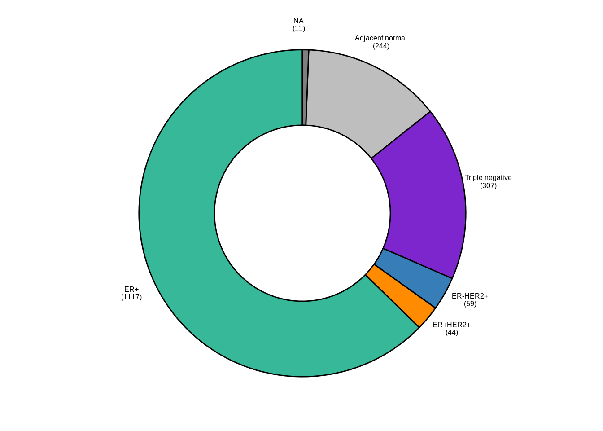
p_donut1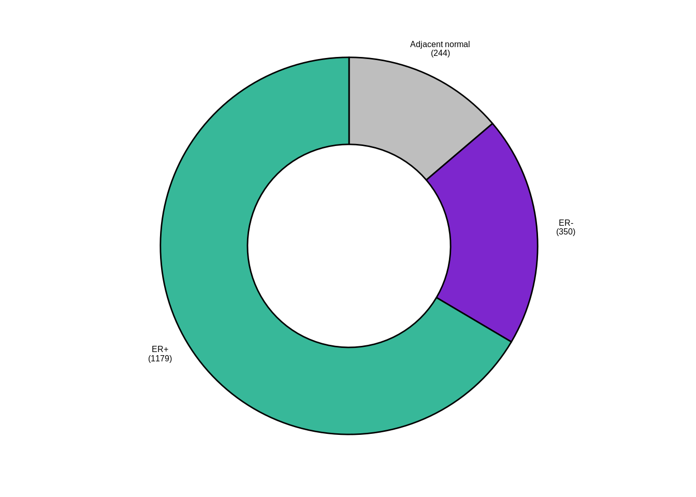
2.2 Number of samples
samp_data %>% mutate(ER1 = forcats::fct_explicit_na(ER1)) %>% count(ER1)## # A tibble: 4 x 2
## ER1 n
## 1 ER- 350
## 2 ER+ 1179
## 3 normal 244
## 4 (Missing) 92.3 Total number of reads
tot_reads <- fread(here("data/sample_qc.csv")) %>%
inner_join(samp_data %>%
select(track), by = "track") %>%
pull(total_reads) %>%
sum()
glue("Overall, we used {round(tot_reads / 1e9, digits = 1)}B reads to cover {scales::comma(nrow(samp_data))} breast tumor and normal samples")## Overall, we used 30.4B reads to cover 1,782 breast tumor and normal samples2.4 Distribution of CpG coverage per sample
We calculate the distribution of every sample's CpG coverage:
samp_covs <- get_samples_coverage_dist(
tracks = samp_data$track,
breaks = c(0:100, 1e5),
intervals = gintervals.all()) %cache_df% here("data/sample_coverage_dist.tsv") %>% as_tibble()samp_covs <- samp_covs %>% left_join(samp_data %>% select(samp, ER = ER1), by = "samp")2.4.0.1 Figure 1B
options(repr.plot.width = 7, repr.plot.height = 7)
p_comulative <- samp_covs %>%
group_by(samp) %>%
summarise(
`>=10` = sum(cpgs[cov >= 10]),
`>=20` = sum(cpgs[cov >= 20]),
`>=30` = sum(cpgs[cov >= 30]),
`>=50` = sum(cpgs[cov >= 50]),
n_tot = sum(cpgs)
) %>%
gather("type", "n", -samp, -n_tot) %>%
ggplot(aes(x = n, color = type, y = 1 - ..y..)) +
stat_ecdf() +
scale_x_log10(labels = scales::scientific) +
scale_color_viridis_d("CpG coverage") +
scale_y_continuous(labels = function(x) round(x * length(unique(samp_covs$samp)))) +
ylab("Samples with #CpGs >= x") +
xlab("# of CpGs (log10)") +
theme(aspect.ratio = 0.8)
p_comulative + theme_bw() + theme(aspect.ratio = 0.8)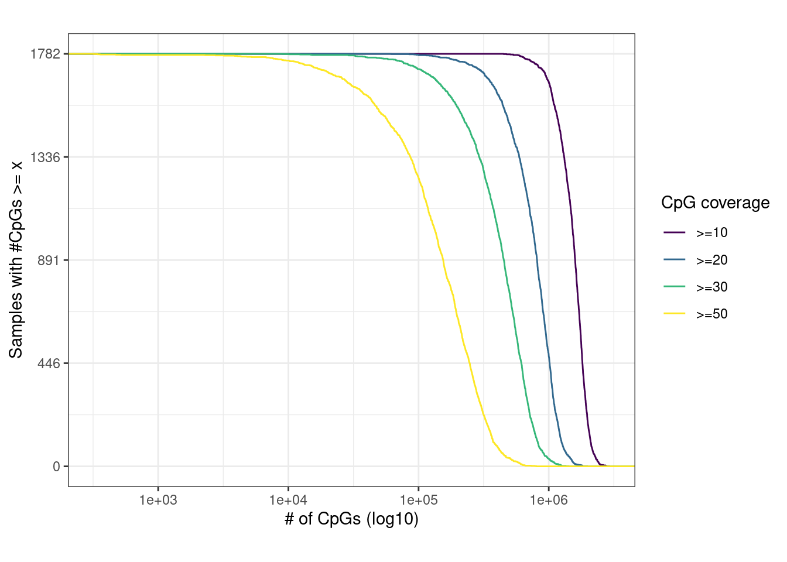
cov_above_10 <- samp_covs %>%
filter(cov >= 10) %>%
group_by(samp) %>%
summarise(cpgs = sum(cpgs))
df <- cov_above_10 %>%
summarise(n_threshold = sum(cpgs >= 1e6), n_tot = n()) %>%
mutate(p = scales::percent(n_threshold / n_tot))
glue("Number of samples (Y axis) with a given number of CpGs (X axis) covered with at least 10, 20, 30 or 50 reads. For example, in all samples 449,710 CpGs are covered with over 10 reads.", n_cpgs = scales::comma(min(cov_above_10$cpgs)))## Number of samples (Y axis) with a given number of CpGs (X axis) covered with at least 10, 20, 30 or 50 reads. For example, in all samples 449,710 CpGs are covered with over 10 reads.glue("Using our version of the RRBS protocol {perc} of the samples were covered by more than 10 reads for more than 1M CpGs", perc = df$p)## Using our version of the RRBS protocol 93% of the samples were covered by more than 10 reads for more than 1M CpGs2.5 Distribution of covered CpGs
We screen for CpGs that are covered by at least 5 reads in half or more of the samples:
min_samples <- round(0.5 * nrow(samp_data))
min_samples## [1] 891cov_cpgs <- gscreen_coverage(samp_data$track, 5, min_samples) %>% annotate_loci() %cache_df% here("data/cov_cpgs.tsv") %>% as_tibble()2.5.0.1 Figure 1C
options(repr.plot.width = 7, repr.plot.height = 3)
p_tss <- cov_cpgs %>%
mutate(tss_d = abs(tss_d) + 1) %>%
ggplot(aes(x = tss_d)) +
geom_density() +
scale_x_log10() +
xlab("Distance from tss (bp)") +
ylab("Density")
p_cg_cont <- cov_cpgs %>%
ggplot(aes(x = cg_cont)) +
geom_density() +
xlab("CpG content (500 bp)") +
ylab("Density")
(p_tss + theme_bw()) + (p_cg_cont + theme_bw())## Warning: Removed 147 rows containing non-finite values (stat_density).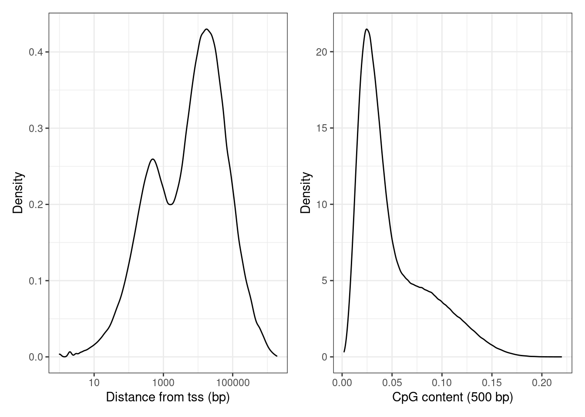
2.6 Promoter coverage
Distribution of mean promoter coverage over all METABRIC samples, considering 13,282 active promoters. Active promoters were defined as promoters that had log expression >7 in at least one of the METABRIC samples used in this paper.
2.6.0.1 Figure 1D
options(repr.plot.width = 4.6, repr.plot.height = 2.7)
prom_expr_cov <- get_promoter_expr_covs()
min_n_expr <- 0
max_expr <- 7
prom_expr_cov_active <- prom_expr_cov %>%
filter(n_expr > min_n_expr, max_expr > !! max_expr)
p_prom_cov <- prom_expr_cov_active %>%
ggplot(aes(x = cov)) +
geom_histogram(binwidth = 0.1) +
scale_x_log10(breaks = c(1, 10, 50, 1000), labels = function(x) round(x)) +
coord_cartesian(xlim = c(0.01,1500)) +
ylab("# of promoters") +
xlab("Mean promoter coverage")
p_prom_cov + theme_bw()## Warning: Transformation introduced infinite values in continuous x-axis## Warning: Removed 119 rows containing non-finite values (stat_bin).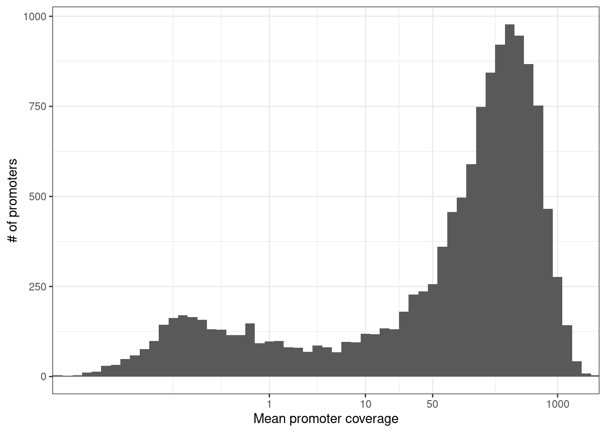
nrow(prom_expr_cov_active)## [1] 13198n_cov <- prom_expr_cov_active %>% filter(cov >= 20) %>% nrow()
glue("{perc} of the promoters were nevertheless covered with over 20 reads on average (mean coverage {cov}), facilitating quantitative analysis downstream.", perc = scales::percent(n_cov / nrow(prom_expr_cov_active)), cov = round(mean(prom_expr_cov_active$cov) ))## 75% of the promoters were nevertheless covered with over 20 reads on average (mean coverage 246), facilitating quantitative analysis downstream.samp_tot_calls <- get_sample_tot_meth_calls() %cache_df% here("data/sample_tot_meth_calls.tsv") %>% as_tibble()
samp_tot_calls_promoters <- get_sample_tot_meth_calls(promoter_intervs) %cache_df% here("data/sample_tot_meth_calls_promoters.tsv") %>% as_tibble()
tot_reads <- sum(samp_tot_calls$Sum)
tot_promoter_reads <- sum(samp_tot_calls_promoters$Sum)
glue("{perc} of the reads mapped to bona-fide promoters", perc = scales::percent(tot_promoter_reads / tot_reads))## 9% of the reads mapped to bona-fide promotersWe can also calculate the % of MSP1 fragments that is covering a promoter:
well_covered_loci <- {
msp1_meth <- get_msp1_meth()
msp1_meth_f <- filter_avg_meth(msp1_meth$avg, normal_fraction = 0.7, tumor_fraction = 0.7)
msp1_meth_f %>% select(chrom, start, end)
} %cache_df% here("data/well_covered_msp1_frags.tsv") %>% as_tibble()
n_loci <- nrow(well_covered_loci)
n_promoters <- well_covered_loci %>% gintervals.neighbors1(promoter_intervs) %>% filter(dist == 0) %>% nrow()
scales::percent(n_promoters / n_loci)## [1] "10%"2.7 Coverage per clinical annotations
samp_covs <- get_sample_tot_meth_calls() %cache_df% here("data/sample_tot_meth_calls.tsv") %>% as_tibble()
samp_covs <- samp_covs %>%
select(samp, tot_cov = Sum) %>%
left_join(samp_data %>% select(samp, stage, grade, iC10, ER = ER1), by = "samp") %>%
mutate(stage = ifelse(stage %in% c(0, "DCIS", 1), "0-1", stage)) %>%
mutate(stage = ifelse(ER == "normal", "N", stage)) %>%
mutate(grade = ifelse(ER == "normal", "N", grade)) %>%
mutate(stage = factor(stage, levels = c("N", "0-1", "2", "3", "4"))) %>%
mutate(grade = factor(grade, levels = c("N", "1", "2", "3"))) 2.7.0.1 Extended Data Figure 1a
options(repr.plot.width = 10, repr.plot.height = 3)
p_stage <- samp_covs %>%
filter(!is.na(stage), !is.na(ER)) %>%
arrange(stage, tot_cov) %>%
mutate(samp = forcats::fct_inorder(samp)) %>%
ggplot(aes(x = samp, y = tot_cov, fill = stage)) +
geom_col() +
theme(axis.ticks.x = element_blank(), axis.text.x = element_blank()) +
scale_y_continuous(labels = scales::unit_format(unit = "M", scale = 1e-6)) +
scale_x_discrete(breaks = FALSE) +
scale_fill_manual(name = "Stage", values = c("N" = "gray", "0-1" = "black", "2" = "blue", "3" = "red", "4" = "orange")) +
xlab("") +
ylab("# of methylation calls")
p_stage + theme_bw() + theme(axis.ticks.x = element_blank(), axis.text.x = element_blank())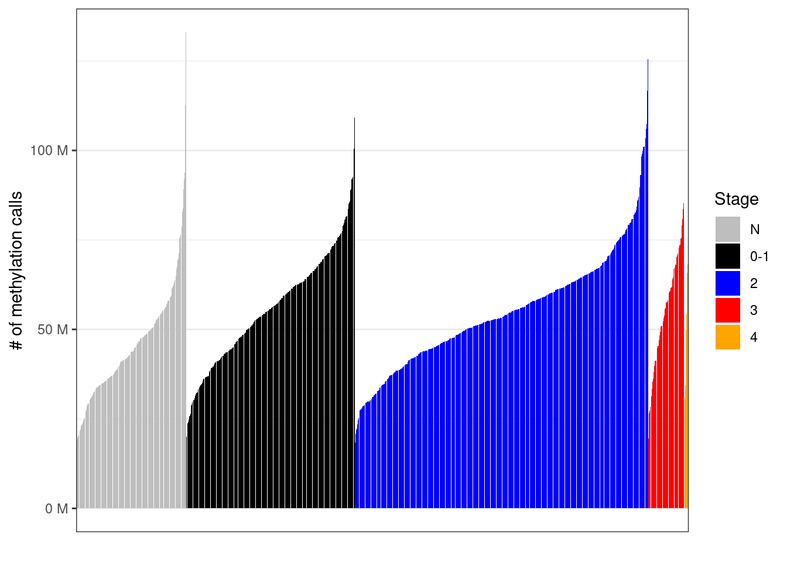
2.7.0.2 Extended Data Figure 1b
options(repr.plot.width = 10, repr.plot.height = 3)
p_iC10 <- samp_covs %>%
filter(!is.na(iC10), !is.na(ER)) %>%
mutate(iC10 = factor(iC10, levels = names(annot_colors$iC10))) %>%
arrange(iC10, tot_cov) %>%
mutate(samp = forcats::fct_inorder(samp)) %>%
ggplot(aes(x = samp, y = tot_cov, fill = iC10)) +
geom_col() +
theme(axis.ticks.x = element_blank(), axis.text.x = element_blank()) +
scale_y_continuous(labels = scales::unit_format(unit = "M", scale = 1e-6)) +
scale_x_discrete(breaks = FALSE) +
scale_fill_manual(values = annot_colors$iC10) +
xlab("") +
ylab("# of methylation calls")
p_iC10 + theme_bw() + theme(axis.ticks.x = element_blank(), axis.text.x = element_blank())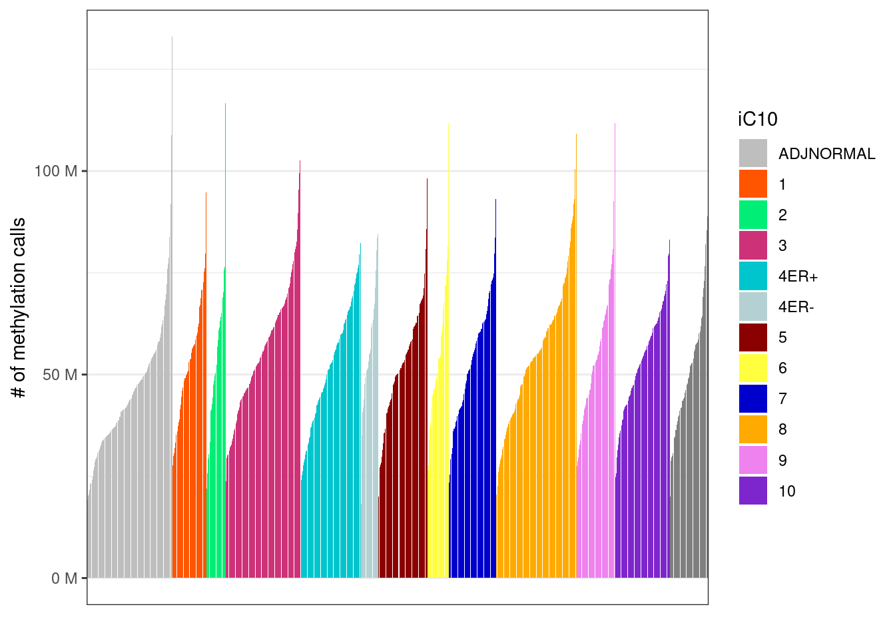
2.8 Marginal CpG coverage
cpg_mars <- covs_marginal(samp_data$track) %cache_df% here("data/cpg_cov_marginal.tsv") %>% as_tibble()cpg_mars <- cpg_mars %>% mutate(mean_cov = cov / nrow(samp_data))
cov_cdf <- map_df(c(0:100, seq(200, 1000, 20)), ~ tibble(cov = .x, n = sum(cpg_mars$mean_cov >= .x))) %cache_df% here("data/cpg_cov_cdf.tsv") %>% as_tibble()2.8.0.1 Extended Data Figure 1b
options(repr.plot.width = 4.4, repr.plot.height = 3.5)
p_cov_cdf <- cov_cdf %>%
filter(cov >= 1) %>%
ggplot(aes(x = cov, y = n)) +
geom_line() +
scale_y_log10(labels = scales::scientific) +
scale_x_log10() +
xlab("Average CpG coverage") +
ylab("# of CpGs")
p_cov_cdf + theme_bw() ## Warning: Transformation introduced infinite values in continuous y-axis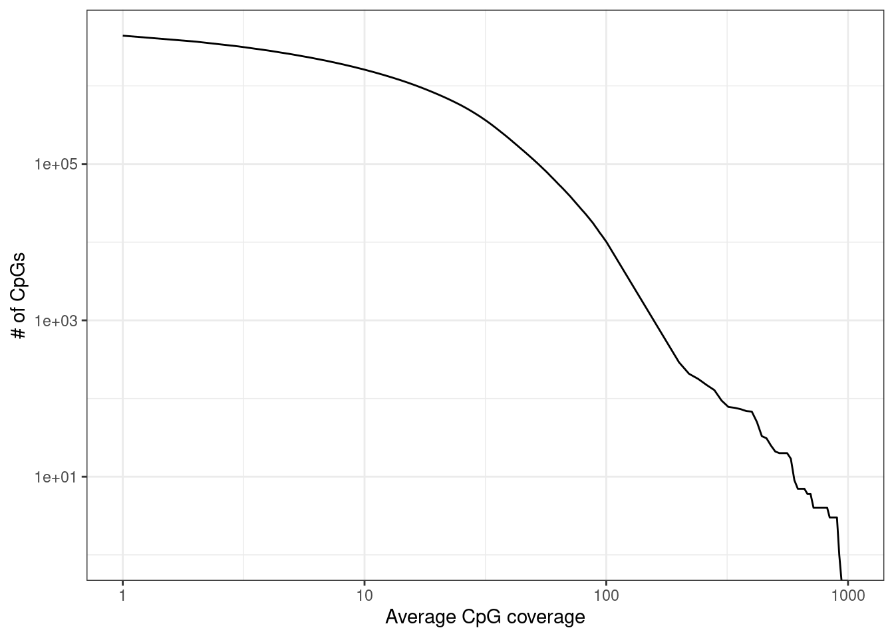
2.8.1 Marginal CpG coverage of k4me1 hotspots
conf <- main_config$genomic_regions$enhancers
conf$H3K4me1_tracks## [1] "Roadmap.Breast_Luminal_Epithelial_Cells.H3K4me1"
## [2] "Roadmap.Breast_Myoepithelial_Cells.H3K4me1_1"
## [3] "Roadmap.Breast_Myoepithelial_Cells.H3K4me1_2"
## [4] "encode.Tfbs.HMECwgEncodeBroadHistoneHmecH3k4me1StdSig"conf$H3K4me1_thresh## [1] 0.97conf$H3K4me1_size## [1] 200intervs <- gpatterns.putative_enhancers(conf$H3K4me1_tracks, quant_thresh = conf$H3K4me1_thresh, normalize = conf$H3K4me1_size, min_tss_dist = conf$H3K4me1_tss_dist)
k4me1_mars <- cpg_mars %>%
gintervals.neighbors1(intervs) %>%
filter(dist == 0) %>%
group_by(chrom1, start1, end1) %>%
summarise(cov = sum(cov), mean_cov = cov / nrow(samp_data))
k4me1_mars <- k4me1_mars %>%
ungroup() %>%
select(chrom = chrom1, start = start1, end = end1, cov, mean_cov)2.8.1.1 Extended Data Figure 1c
options(repr.plot.width = 4.4, repr.plot.height = 3.5)
p_k4me1 <- k4me1_mars %>%
ggplot(aes(x = mean_cov, y = (1 - ..y..) * nrow(k4me1_mars))) +
stat_ecdf() +
scale_y_log10(labels = scales::scientific, breaks = c(10, 1e3, 1e4, 1e5)) +
scale_x_log10(breaks = c(1, 10, 30, 100, 1000)) +
xlab("Mean coverage") +
ylab("# of k4me1 hotsplots") +
vertical_labs()
p_k4me1 + theme_bw()## Warning: Transformation introduced infinite values in continuous y-axis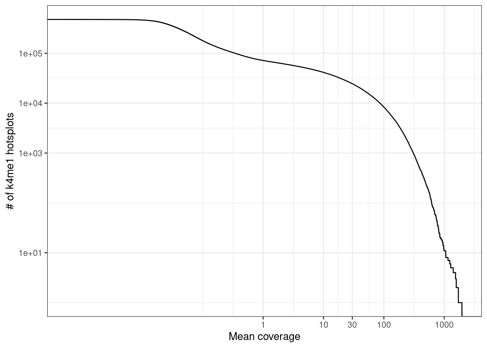
k4me1_mars <- cpg_mars %>%
gintervals.neighbors1(enh_intervs_tumors) %>%
filter(dist == 0) %>%
group_by(chrom1, start1, end1) %>%
summarise(cov = sum(cov), mean_cov = cov / nrow(samp_data))
k4me1_mars <- k4me1_mars %>%
ungroup() %>%
select(chrom = chrom1, start = start1, end = end1, cov, mean_cov)options(repr.plot.width = 4.4, repr.plot.height = 3.5)
p_k4me1_tumors <- k4me1_mars %>%
ggplot(aes(x = mean_cov, y = (1 - ..y..) * nrow(k4me1_mars))) +
stat_ecdf() +
scale_y_log10(labels = scales::scientific, breaks = c(10, 1e3, 1e4, 1e5)) +
scale_x_log10(breaks = c(1, 10, 30, 100, 1000)) +
xlab("Mean coverage") +
ylab("# of k4me1 hotsplots") +
vertical_labs()
p_k4me1_tumors + theme_bw()## Warning: Transformation introduced infinite values in continuous y-axis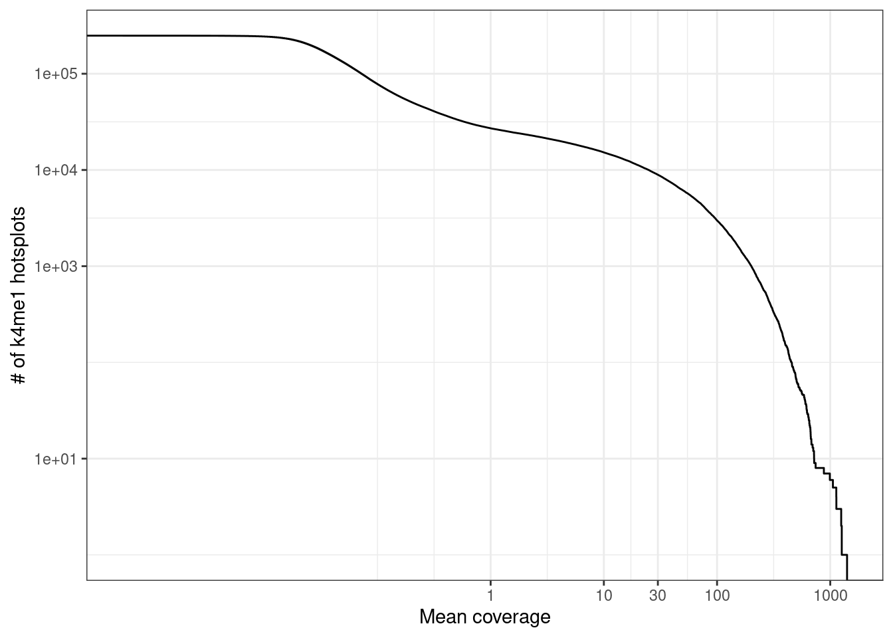
2.9 Sample cellularity
2.9.0.1 Extended Data Figure 1d
p_cellularity_cov <- samp_covs %>%
filter(!is.na(ER)) %>%
left_join(samp_data %>% select(samp, cna_cellularity)) %>%
slice(sample(1:n())) %>%
filter(ER != "normal") %>%
ggplot(aes(x = tot_cov, y = cna_cellularity, color = ER)) +
geom_point(size=0.1) +
scale_color_manual(values = annot_colors$ER1) +
scale_x_log10() +
theme(aspect.ratio = 1) +
guides(color = FALSE) +
xlab("Sample Coverage") +
ylab("Cellularity") +
vertical_labs() +
facet_grid(.~ER)## Joining, by = "samp"## Warning: `guides(<scale> = FALSE)` is deprecated. Please use `guides(<scale> =
## "none")` instead.p_cellularity_cov## Warning: Removed 279 rows containing missing values (geom_point).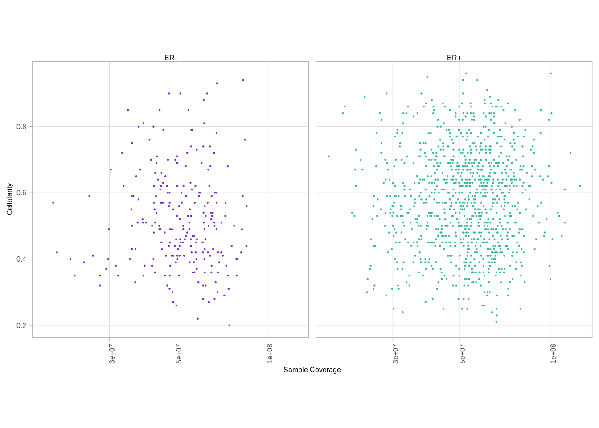
samp_genomic_meth <- get_genomic_avg_meth() %>% intervs_to_mat() %>% colMeans(na.rm=TRUE) %>% enframe("samp", "meth") %cache_df% here("data/samp_genomic_meth.tsv") %>% as_tibble()
p_cellularity_meth <- samp_genomic_meth %>%
left_join(samp_data %>% select(samp, cna_cellularity, ER = ER1)) %>%
filter(!is.na(ER)) %>%
slice(sample(1:n())) %>%
filter(ER != "normal") %>%
ggplot(aes(x = meth, y = cna_cellularity, color = ER)) +
geom_point(size=0.1) +
scale_color_manual(values = annot_colors$ER1) +
theme(aspect.ratio = 1) +
guides(color = FALSE) +
xlab("Sample genomic methylation") +
ylab("Cellularity") +
facet_grid(.~ER)## Joining, by = "samp"## Warning: `guides(<scale> = FALSE)` is deprecated. Please use `guides(<scale> =
## "none")` instead.p_cellularity_meth## Warning: Removed 279 rows containing missing values (geom_point).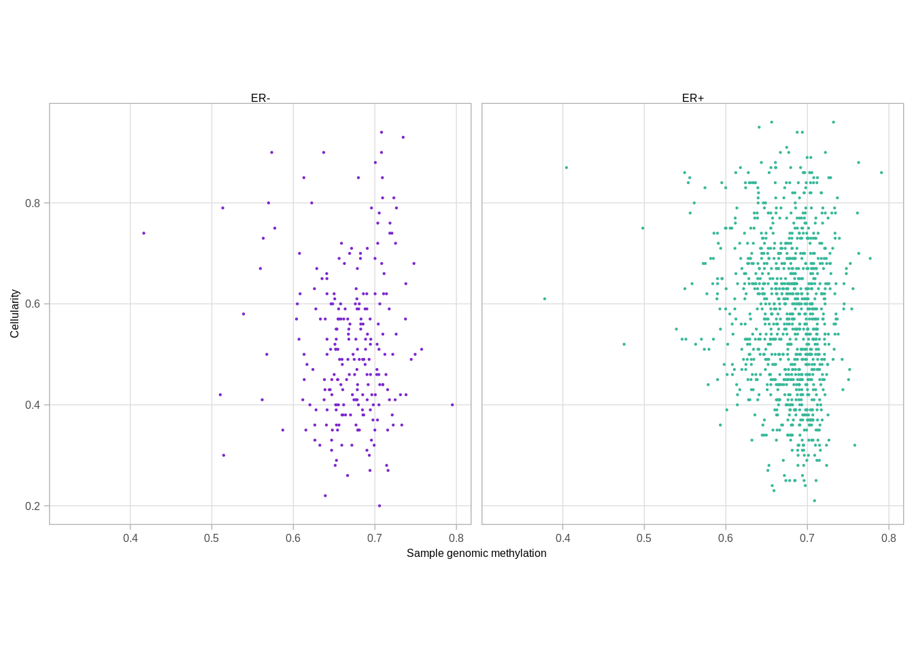
gc()## used (Mb) gc trigger (Mb) max used (Mb)
## Ncells 4497725 240.3 7606011 406.3 7606011 406.3
## Vcells 211991261 1617.4 562383716 4290.7 490804511 3744.6